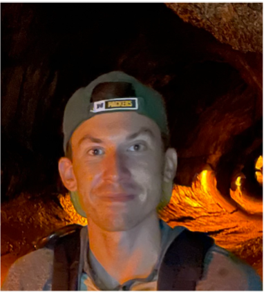
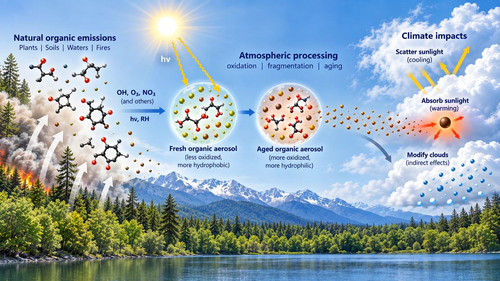
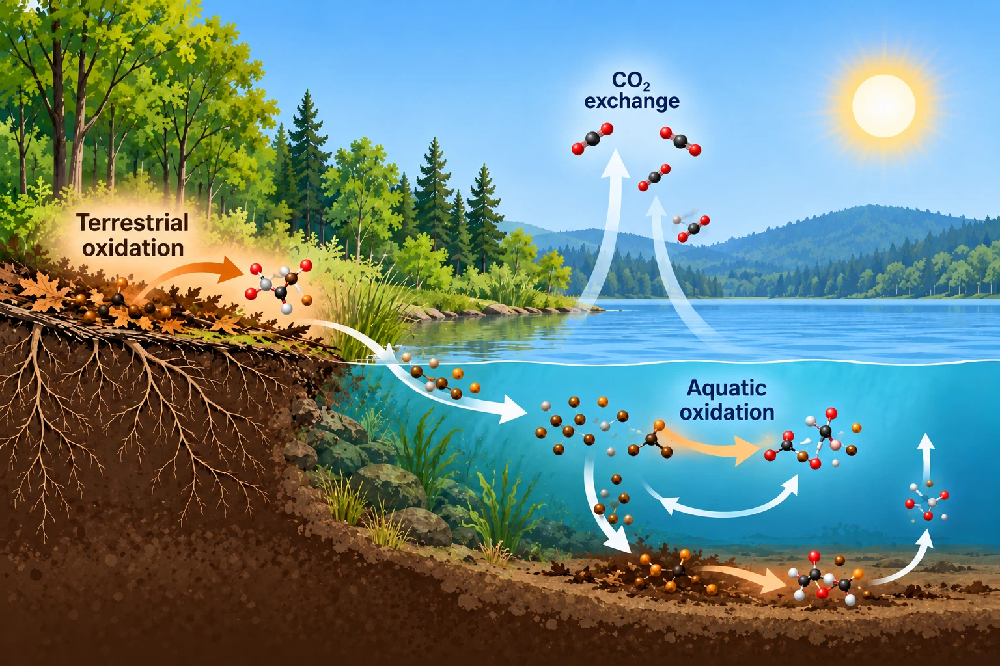
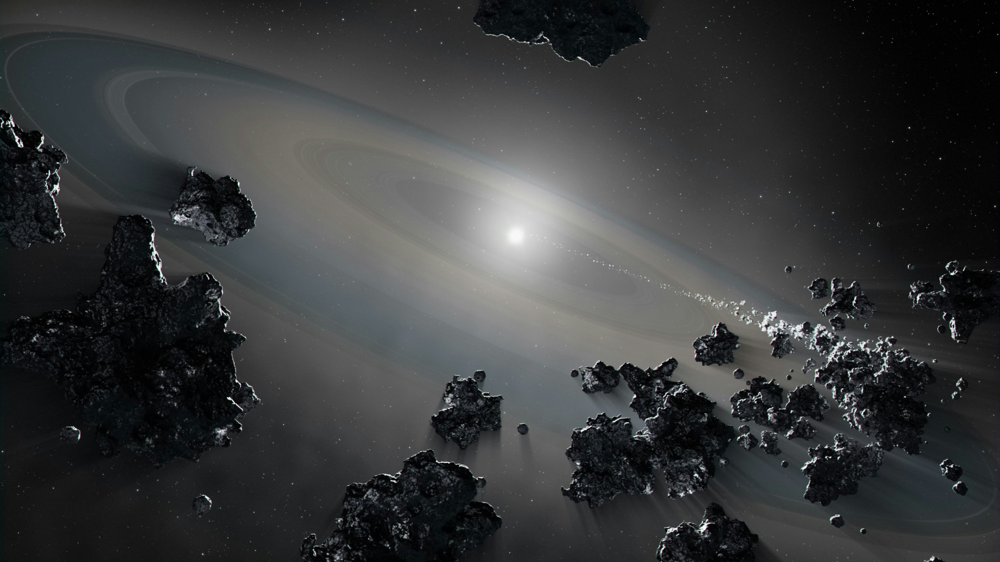

NSF-AGS Postdoctoral Fellow · Harvard University
Daniel R. Crocker
I use stable isotope geochemistry to investigate the origins, transformations, and fate of organic matter across terrestrial and extraterrestrial environments.

Research Program
Organic Matter Across Earth and Planetary Systems
My research combines high-precision isotope measurements, laboratory experiments, and environmental observations to trace the chemical origins, transformation, and fate of organic matter – from its origins in the early Solar System to its contemporary roles in Earth's atmosphere and surface environments. A central innovation of this research is my development of a novel triple oxygen isotope technique for organic materials, allowing me to recover previously inaccessible information about how organic matter forms and chemically evolves.

Atmospheric Organic Aerosol Chemistry
Tracing organic aerosol sources and oxidation pathways to understand how atmospheric chemistry shapes their climate effects.

Aquatic & Terrestrial Carbon Cycling
Resolving organic matter degradation pathways and rates to understand their controls on carbon persistence and cycling in surface environments.

Origins of Organic Matter in the Solar System
Reconstructing the formation, distribution, and alteration of meteoritic organics to trace the chemical origins of prebiotic organic material in the early Solar System.